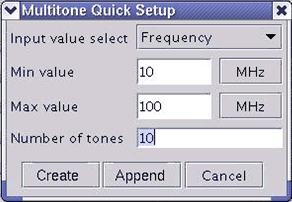

Defining Many Tones Quickly
- Click the Quick Setup button at the bottom of the dialog window after completing the general
waveform settings ("Fs" (sampling frequency) and "N" (number of frequency bins)). The Multitone
Quick Start dialog box appears as shown below.

- Select either of the following entry methods in the Input Value Select field:
- Frequency: You can specify the range of the desired tones with the frequency values.
- Bin: You can specify the range of the desired tones with the frequency bin numbers.
- Enter the minimum and maximum values of the desired tone range.
For the "Frequency" entry method, each value must be a frequency corresponding to a frequency bin from "1" to "N" (number of frequency bins). The frequency corresponding to bin "N" is half of "Fs" (sampling frequency).
If a frequency value "f" does not correspond to a bin, according to the formula f = n * Fs/2N, with n is an element of [1, N], the frequency will be adjusted to the closest frequency that does correspond to the bin.
You can select the appropriate frequency unit (MHz, kHz, or Hz).
For the "Bin" entry method, each value must be an integer from the frequency bin "1" to "N" (number of frequency bins).
- Enter the number of tones to generate into the Number of Tones field. This value must be
equal to or smaller than 4096 and number of frequency bins between "Min Value" and "Max Value".
If ("Max Value" - "Min Value")/"Number of Tones" does not correspond to the bin span, the tone frequencies will be adjusted to the closest frequencies that do correspond to the bin span.
- Click the Create button. The Multitone Quick Start dialog box closes.
The tone frequencies between the "Min Value" and the "Max Value" are set up with regular intervals ("Max Value" - "Min Value")/"Number of Tones" into the Multitone Generation dialog window. At this time, the tones are sorted in ascending frequency/bin order and the amplitude factor is "1".
- Or click the Append button. The Multitone Quick Start dialog box closes.
If there are frequencies/bins entered in the Multitone Setup, the tone frequencies between the "Min Value" and the "Max Value" are appended to the existing tones. If there are some bins overlay, the existing bins keep unchanged and the appending tones in the overlay range are thrown away. The appending tones which are not in the overlay range will still be appended.
If there are no frequencies/bins entered in the Multitone Setup at all, then the append functionality will be the same like the create functionality.
- If necessary, in the Multitone Generation dialog window, change the amplitude factor and enter the phase shift (offset) of the tone.